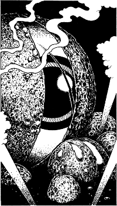

You plunge your weapon into the monstrous eye and gouts of a luminous jelly-like substance pour from the wound. A ghastly inhuman scream of pain rises from the ground beneath your feet. Jets of hissing steam erupt through the sand, and a stinging cloud of grit assails your eyes.
You reel backwards, shielding your face from the blast, but an unexpected blow to your legs sends you sprawling to the ground (lose 2 ENDURANCE points). Before you can rise, a warty, green tentacle coils round your waist and pulls you slowly towards the mutilated eye.

If you have the Magnakai Discipline of Psi-surge and wish to use it, turn to 190.
If you do not possess this skill, or if you do not wish to use it, turn to 121.